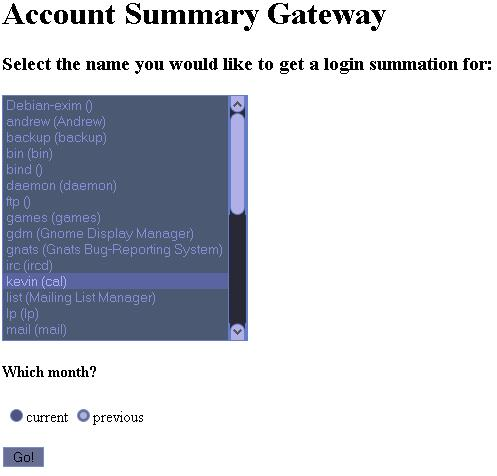

Account Gateway
Program Description
The account gateway utilizes the last command-line tool included in unix distributions, which
reports the number of logins for each user.
Features
- Written in Perl as a CGI script
- Regular expressions and pattern matching
- Interfaces with shell program
Sample Run
